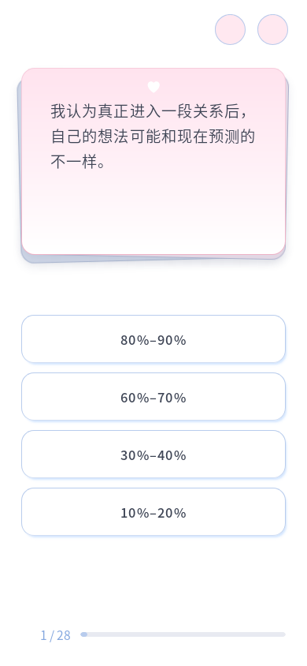
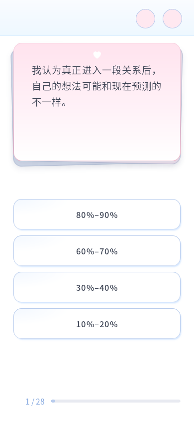

按钮左上角内侧新增很淡的局部蓝色径向渐变，最高 8% 不透明度，比右下阴影更轻；渐变限制在圆角内部，文字保持清晰。
上栏底线位于顶部圆圈下沿与题卡上沿之间的中点：底线是清楚的 1px 浅蓝线，下方直接为白色；上方蓝色向页面顶端逐渐变淡。使用题卡逻辑顶边，换题动画时横线保持稳定。
首页、答题页、结果页、关于页顶部圆圈共用 38.88px 设计直径及同一套位置、间距、描边规则。右侧两圈采用共同视口坐标，避免答题页滚动条导致与其他页面错位；左侧导航同高。


验证：10 个视口、全部 96 题共 960 组通过；上栏定位、自然阅读、按钮内部渐变、层叠、进度和重复 resize 正常。8 个视口 × 4 个页面共 32 组圆圈坐标对比通过，包括矮横屏有滚动条的场景。完整 28 题、导航、刷新、关于页往返、减少动态效果、200% 字体下五个长短题、相关 Node 测试 2/2 均通过。题库与评分未修改。
| 视口 | 页面 | 结果 |
|---|---|---|
| 320 × 572 | 首页／答题／结果／关于 | 位置、尺寸、描边一致 |
| 390 × 844 | 首页／答题／结果／关于 | 位置、尺寸、描边一致 |
| 430 × 932 | 首页／答题／结果／关于 | 位置、尺寸、描边一致 |
| 768 × 1024 | 首页／答题／结果／关于 | 位置、尺寸、描边一致 |
| 1440 × 900 | 首页／答题／结果／关于 | 位置、尺寸、描边一致 |
| 844 × 390 | 首页／答题／结果／关于 | 位置、尺寸、描边一致 |
| 899 × 900 | 首页／答题／结果／关于 | 位置、尺寸、描边一致 |
| 900 × 899 | 首页／答题／结果／关于 | 位置、尺寸、描边一致 |